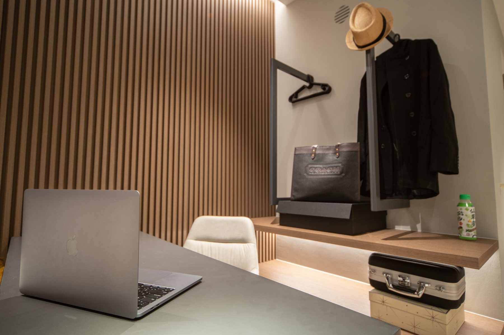
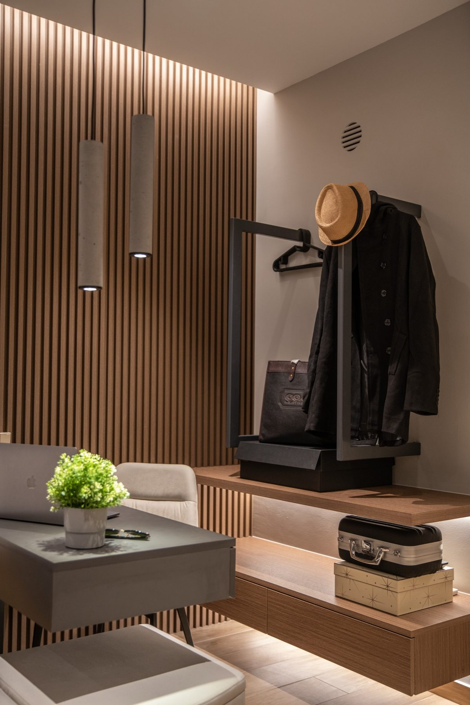
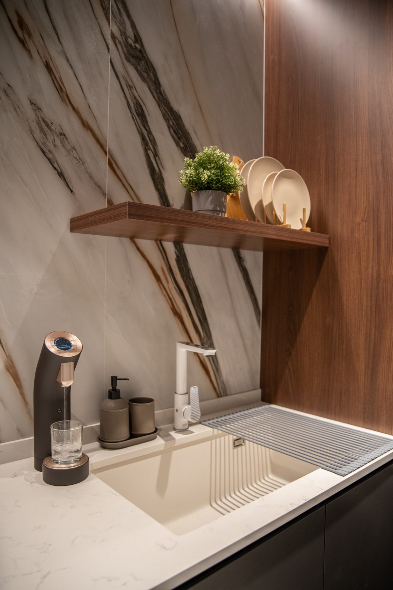
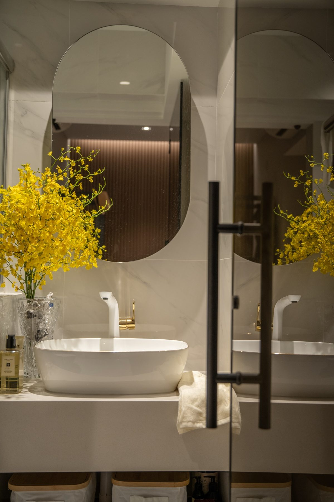

BlogProject stories
Hotel at Home: a small BTO flat designed like a hotel suite

A compact BTO flat in Anchorvale, designed to feel like checking into a hotel suite. Walnut fluted walls, a curved sofa, and an open rail where a closet would usually be.
- Location
- Anchorvale, Sengkang
- Home
- BTO flat, 50 sqm and below
- Recognition
- Honorary Award, Singapore Interior Design Awards 2022
- Design and build
- M2D Interior Design
Small homes are usually designed to hide their size. This one was designed to make you forget it. The idea was a flat with the feeling of a good hotel suite: a little bold, a little indulgent, and very easy to live in.
One material, used with conviction
Custom-made walnut fluted panels frame the walls of the bedroom and the living area. Running one strong material through the whole flat gives a small space a sense of grandeur. It also ties the rooms together, so the home reads as one suite and not as a set of small boxes.

Furniture as the focal point
In the living area, the furniture does the work that a feature wall normally would. A large television and a white, curved, soft-suede sofa were chosen as the centre of the room. They give it an inviting lounge feel, and they pull your attention away from how compact the space really is.
Small homes are usually designed to hide their size. This one makes you forget it.
The hotel details
The small touches are what make the idea land. Where a closet would normally stand, there is an open hanging rail above a lit ledge, much like the luggage bench in a hotel room. Pendant lights hang low beside it.
In the kitchen, the backsplash runs full height in a veined, marble-look surface. In the bathroom, a tall pill-shaped mirror stands over a vessel basin. When a bathroom is small, height matters, so the eye is drawn upwards.



Recognition
Hotel at Home received an Honorary Award for Best in Residential Design, in the category for homes of 50 sqm and below, at the Singapore Interior Design Awards 2022.
What to take from this home
- Pick one strong material and repeat it, instead of a different feature on every wall.
- Give a small room one focal point. Furniture can do that job.
- Use height: full-height panels, curtains, a tall mirror, a backsplash that runs to the top.
- Borrow from hotels: an open rail, a lit ledge and lighting at more than one level.
If you are planning a compact flat, my notes on what a 2-room flexi renovation costs cover where the money is best spent. You can see more of this home on M2D’s project page for Hotel at Home.